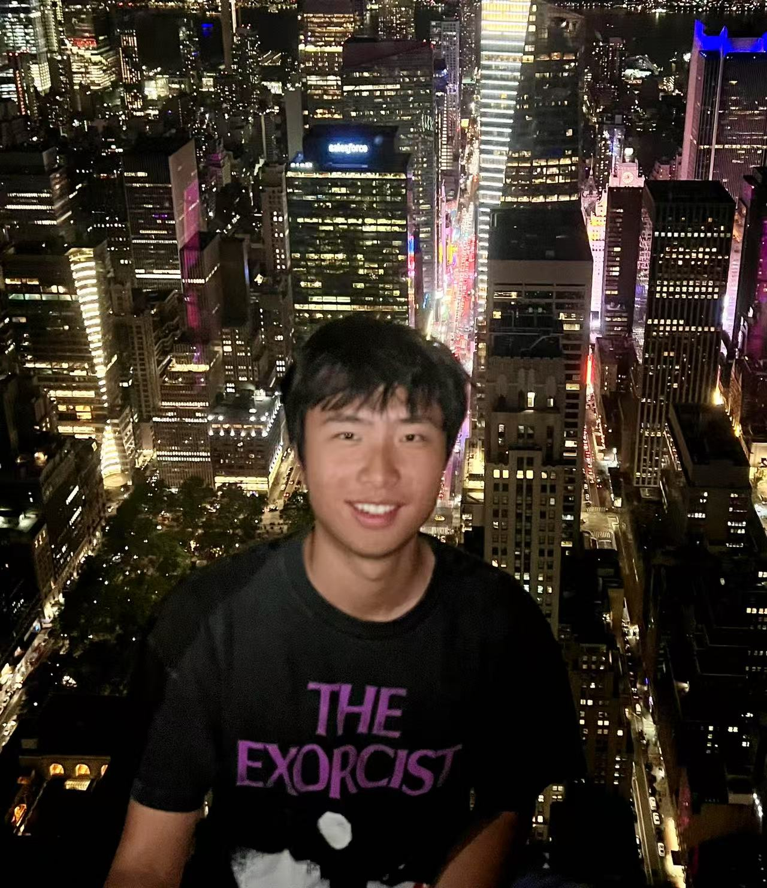

Personal Background
I grew up in Chengdu, China, a city deeply rooted in history and culture. Chengdu itself dates back to 367 BC, and my high school recently celebrated its 2,160th anniversary, having been founded in 141 BC. The city is home to the world-famous Panda Research Center, where conservation efforts protect and study giant pandas. Chengdu is also renowned for its vibrant culinary scene, particularly its hotpot, a must-try for any visitor.
I am a lifelong football fan and have supported Chelsea Football Club since 2014, when I had the unforgettable experience of visiting Stamford Bridge. Though my childhood dream was to become a football commentator, I have since accepted that I am better at watching football than playing it. That said, I have been playing tennis since I was nine and continue to enjoy it as a favorite pastime. Since moving to the U.S. for college, I have also developed a deep appreciation for hockey and now closely follow the NHL.
I am an avid film enthusiast, particularly drawn to the works of Denis Villeneuve and Christopher Nolan. Their ability to blend compelling narratives with visually stunning cinematography is something I deeply admire. In addition to film, I have a passion for photography. While I used to bring my Fujifilm XPro3 on every trip, I have recently embraced the convenience of mobile photography, capturing meaningful moments wherever I go.